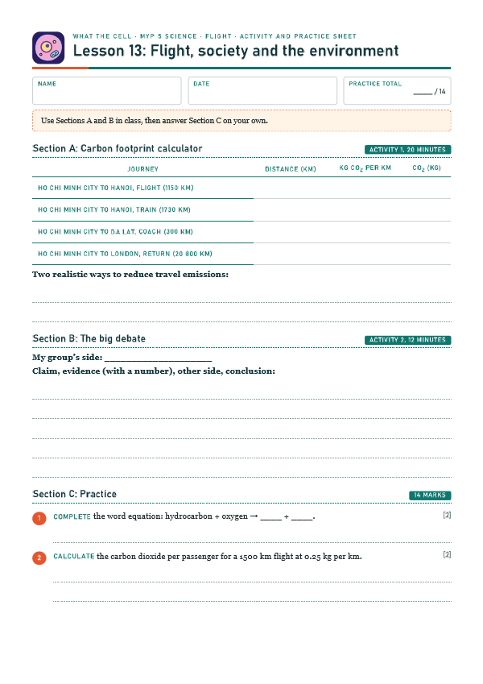

By the end of the lesson you can
- Write the equation for burning jet fuel
- Calculate the carbon footprint of a journey
- Compare flying with other ways to travel
- Discuss the benefits and costs of flight and justify a view
Keys: arrows or a presentation clicker move the slides, F for full screen. Slides with a red dot have a video or simulation.
Videos (all 5 minutes or less)
- 4:50
The Flying Facts - Climate Change and Aviation explained in 5 minutes
Mulu Project. While you watch: How much of climate change is caused by flying? Slide 10.
Simulations
- Lab
Print and practise

Activity and practice sheet
Used in the lesson’s activities, with practice questions. Your teacher has the answers.
Download (PDF)Lesson 13 slides
All 20 slides in one file, to read again or print. The video buttons on the slides open YouTube.
Download the slides (PDF)Revising? The Revision tab on the unit page has the unit notes and review.
Notes: Flight and the environment
complete combustion
Burning with enough oxygen to make only carbon dioxide and water. For example: Organic compounds, Lesson 6.
Key words
| carbon footprint | greenhouse gases from an activity, in kg CO2 |
|---|---|
| greenhouse gas | traps heat in the atmosphere |
| passenger-kilometre | one person carried one km |
| contrail | ice cloud from engine water vapour |
| sustainable aviation fuel | jet fuel from waste or plants |
| globalisation | a more connected world |
| offsetting | paying to remove carbon elsewhere |